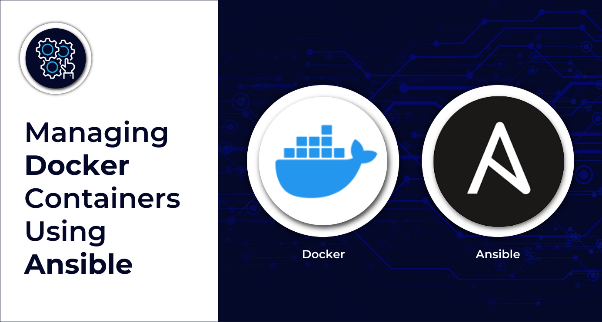
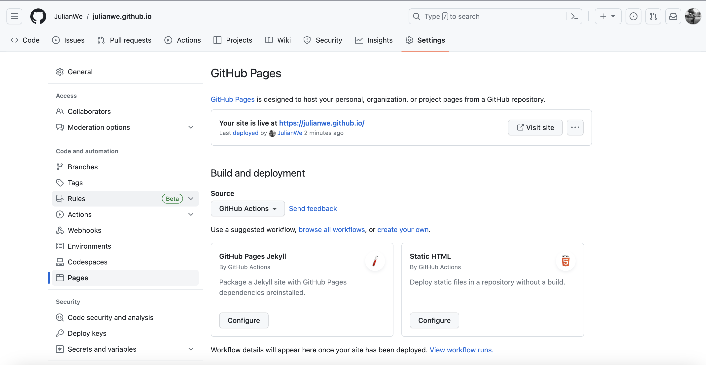

How to convert README.md file to HTML with utf-8 encoding
brew install pandoc
pandoc -f markdown README.md > index.html
or
iconv -t utf-8 README.md | pandoc -t html -o README.html | iconv -f utf-8How to build docker container
FROM ubuntu:latest
RUN apt-get update && apt-get install -y curl
RUN apt-get update && apt-get install -y nginx
RUN apt-get install npm -y
RUN apt-get install nodejs -y
RUN apt-get install vim -y
COPY . /var/www/html/
CMD ["nginx", "-g", "daemon off;"]How to run docker container
#Dockerimage
docker build -t webapp .
docker images -a
docker run -d -p 8080:80 webapp
# DockerHub
docker login --username victorynox0815
docker tag webapp victorynox0815/myrepo:webapp
docker push victorynox0815/myrepo:webappCombine Readme and Template
#!/bin/bash
for folder in projects/*/; do echo ${folder#*/}; done
mkdir test
for folder in projects/*; do pandoc -f markdown $folder/README.md > test/${folder#*/}.html; doneBuild Docker Container using ansible
---
- name: build html website
hosts: localhost
connection: localhost
gather_facts: False
vars:
path: "/Users/jw/Documents/GitHub/julianwe.github.io"
vars_prompt:
- name: pw
prompt: Enter the Docker password
tasks:
- name: convert README to HTML
shell: |
cd {{ path }}
for folder in projects/*; do pandoc -f markdown $folder/README.md > projects/${folder#*/}/${folder#*/}.html;
done;
ls {{ path }}/projects
register: folder
- name: set project, URLs & directorys facts
set_fact:
name: "{{ item | trim ('/')}}"
file_path: "{{ path }}/projects/{{ item }}/{{ item | trim ('/')}}.html"
projects_templatej2: "{{ path }}/projects/ansible/projects_template.j2"
projectsj2: "{{ path }}/projects/ansible/projects.j2"
url: "https://julianwe.github.io/projects/{{ item }}/{{ item | trim('/')}}.html"
identifier: "{{ index }}"
loop: "{{ folder.stdout_lines }}"
loop_control:
index_var: index
register: facts
- name: set html content facts
set_fact:
html: "{{ lookup('file', item.ansible_facts.file_path) }}"
file_path: "{{ item.ansible_facts.file_path }}"
url: "{{ item.ansible_facts.url }}"
identifier: "{{ item.ansible_facts.identifier }}"
name: "{{ item.ansible_facts.name }}"
loop: "{{ facts.results }}"
register: html_files
- name: create project HTML sites
template:
src: "{{ projects_templatej2 }}"
dest: "{{ item.ansible_facts.file_path }}"
delegate_to: localhost
when: item.ansible_facts.name != "projects"
loop: "{{ html_files.results }}"
- name: set fact
set_fact:
projects_html: "{{ item.ansible_facts.html }}"
when: item.ansible_facts.name == "projects"
loop: "{{ html_files.results }}"
- name: create project site
template:
src: "{{ projectsj2 }}"
dest: "{{ path }}/projects.html"
delegate_to: localhost
when: item.ansible_facts.name == "projects"
loop: "{{ html_files.results }}"
- name: Stop a container
docker_container:
name: webapp
state: stopped
- name: Log into private registry and force re-authorization
docker_login:
username: "victorynox0815"
password: "{{ pw }}"
reauthorize: true
register: login
- name: Build an image and push
docker_image:
build:
path: "{{ path }}"
name: victorynox0815/docker-repo:webapp
tag: v1
force_source: yes
push: yes
source: build
delegate_to: localhost
- name: Start a container
docker_container:
name: webapp
state: started
- name: Deploy Website on IPFS
command: ipfs add -r {{ path }}
Create .github/workflows/docker-image.yml Action filename: Docker Image CI
on:
push:
branches: [ "main" ]
pull_request:
branches: [ "main" ]
jobs:
build:
runs-on: ubuntu-latest
steps:
- uses: actions/checkout@v3
- name: Build the Docker image
run: docker build . --file Dockerfile --tag my-image-name:$(date +%s)```yaml
---
version: '2.0'
services:
webapp:
image: 'victorynox0815/docker-repo:webapp'
expose:
- port: 80
as: 8080
to:
- global: true
profiles:
compute:
webapp:
resources:
cpu:
units: 2
memory:
size: 512Mi
storage:
- size: 10Gi
placement:
dcloud:
pricing:
webapp:
denom: uakt
amount: 1000
deployment:
webapp:
dcloud:
profile: webapp
count: 1```